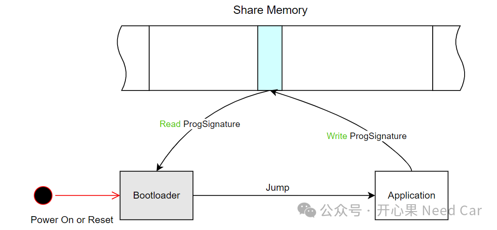
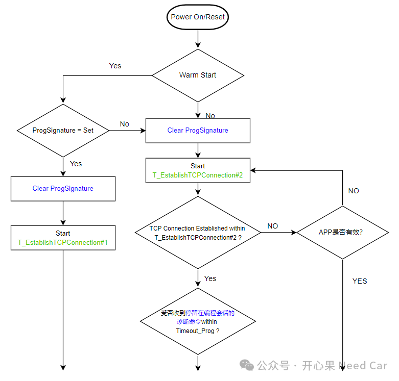
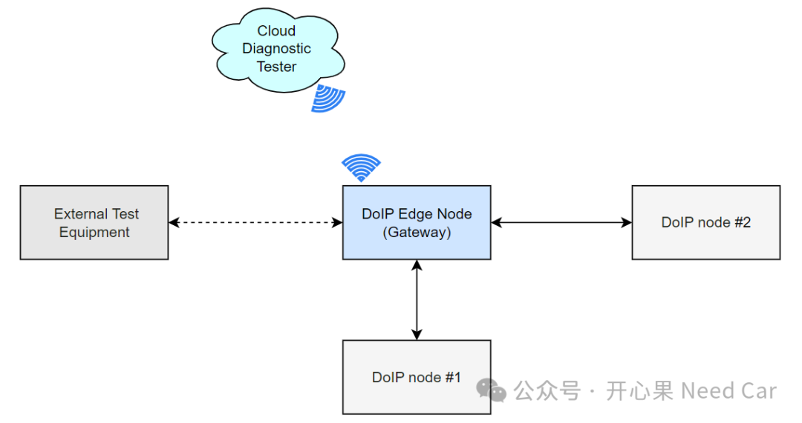
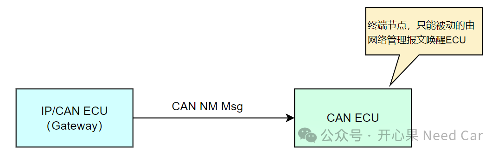

随着以太网技术在汽车领域的广泛应用，基于以太网（DoIP，diagnostic communication over Internet Protocol）的车辆刷写已经不是什么新鲜事。但是，当技术落地开发时，总有很多细枝末节值得我们思考和留意。本文，聊聊基于以太网的软件刷写QA。Q1：Application请求更新和正常冷启动的TCP连接等待时间一样吗？
A1：一般不一样。为了便于理解这个问题，我们先进行一些拓展补充，芯片内部会包含用户的Bootloader程序和用户Application程序。当Application需要更新时，Application可以先写（Write）一个标志（eg：ProgSignature）到一个共享内存区（Share Memory）。之后，程序进入Bootloader，在Bootloader读取（Read）该标志，进而判断Application是否有更新请求，示意如下：

如上图，当程序在Bootloader中时，进入Application之前，需要进行Application更新请求判断。如果有请求，程序停留在Bootloader中，等待更新Application的诊断命令。因为是基于DoIP的刷写，所以，建立TCP的连接是先决条件（这里假设这个TCP连接时间是T_EstablishTCPConnection#1）；如果没有更新Application请求，也需要建立TCP连接（这里假设这个TCP连接时间是T_EstablishTCPConnection#2），以便于在诊断接收窗口期（Timeout_Prog，eg:5ms/20ms）可以接收到诊断指令，这一步主要为了防止控制器变砖。示意如下：

所以，问题就是：T_EstablishTCPConnection#1和T_EstablishTCPConnection#2时间一样吗？如果Application程序不需要更新，即：ProgSignature没有置位（No Set）。则应尽快地建立以太网的通信连接（eg：T_EstablishTCPConnection#2 = 1s）。如果Application程序有更新请求，即：ProgSignature置位（Set）。为了确保后续的刷写，则可以容忍它的以太网通信连接时间（eg：T_EstablishTCPConnection#1 = 30s）。注意：如上的1s或者30s均指最大等待TCP建立连接时间，对于实时性要求严苛的MCU级芯片，实际的TCP连接时间用不了这么长。
A2：回答这个问题，我们先了解一下整车的以太网网络拓扑。车辆的以太网拓扑示意如下：

如上图，基于DoIP的诊断，一般会包含这样几个角色：外部诊断设备（ External Test Equipment）、云端（Cloud Diagnostic Tester）、边缘节点（DoIP Edge Node）、以太网终端节点（DoIP node）。
既然大家的角色不同，所以，在功能上也会有所区分。了解了基于DoIP的以太网拓扑，我们回到问题本身：谁去主动发起TCP连接呢？
一般来说，DoIP node作为以太网的终端节点，会作为TCP连接的Client端，DoIP的Server端。由于以太网的终端节点需要与边缘节点通信，或者让边缘节点转发以太网报文，边缘节点不仅会充当交换机（Switch）的角色，还需要作为TCP的Server端。所以，问题也就有答案了：当DoIP node和DoIP Edge Node进行TCP诊断通信时，由DoIP node去主动发起TCP连接（尤其DoIP node节点进入编程会话时）。结合Q1中的T_EstablishTCPConnection时间，我们可以理解：每次DoIP node（TCP Client）复位或者冷启动，需要主动发送TCP请求。关于DoIP Node与DoIP Edge Node建立TCP连接需要注意以下几点：- DoIP Node启动时发起TCP连接，以便于后续的DoIP通信；
- 只有DoIP Edge Node发送RESET或者shutdown请求时，断开两者的TCP连接；
- 如果DoIP Edge Node意外断开，DoIP Node需要尝试重新与DoIP Edge Node建立TCP连接；
- 如果DoIP Edge Node复位，DoIP Node需要断开与DoIP Edge Node的TCP连接。
A3：先明确一下S3Server定义。S3Server时间是指Server在收到诊断命令请求后，保持在非默认会话（No-Default Session）的持续时间（eg：5s）。S3Server启动/复位与会话之间的联系，示意如下：如果DoIP Node A初始化完成，优先DoIP Node B启动S3Server时间。当DoIP Node B没有完成初始化或者初始化时间过慢时，会导致DoIP Node A的S3Server时间超时退出非默认会话，进而影响后续的诊断。所以，进去非默认会话后，S3Server启动时间需要等到Client与Server完成DoIP连接。Q4：Bootloader中，为什么要发送网络管理报文？
A4：在一些OEM的需求中，开发Bootloader的小伙伴是否留意到这样一个需求：在Bootloader中需要周期性（eg：500ms±10%）发送网络管理报文（eg：0x53F）。这是为什么呢？我们知道：在Bootloader中，一般也没有网络管理的需求，网络管理一般是在Application中使用。
举一个例子：支持以太网和CAN的ECU节点与子节点CAN ECU的诊断需要通过CAN报文交互，而CAN ECU的唤醒方式只能被动接收CAN NM Msg唤醒，如果IP/CAN ECU在启动进入Bootloader之后，没有发送CAN网络管理报文给CAN ECU，那么，CAN ECU无法被唤醒，也就无法建立与IP/CAN ECU的通信。所以，这就是为什么要求在Bootloader中发送CAN NM Msg的原因。示意如下：

同时，考虑CAN ECU可能是支持PNC（Partial Network Cluster）的网络管理，所以，发送CAN NM Msg时，所有的User Data可以全部置位，比如：0x3F 0x40 0xFF 0xFF 0xFF 0xFF 0xFF 0xFF。
点击下方关注，一起聊聊Autosar/嵌入式，如果需要，联系作者进群，给你更专业的解答